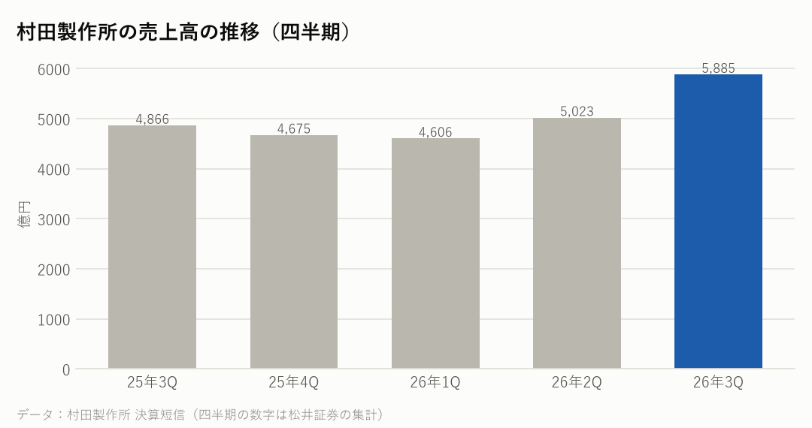
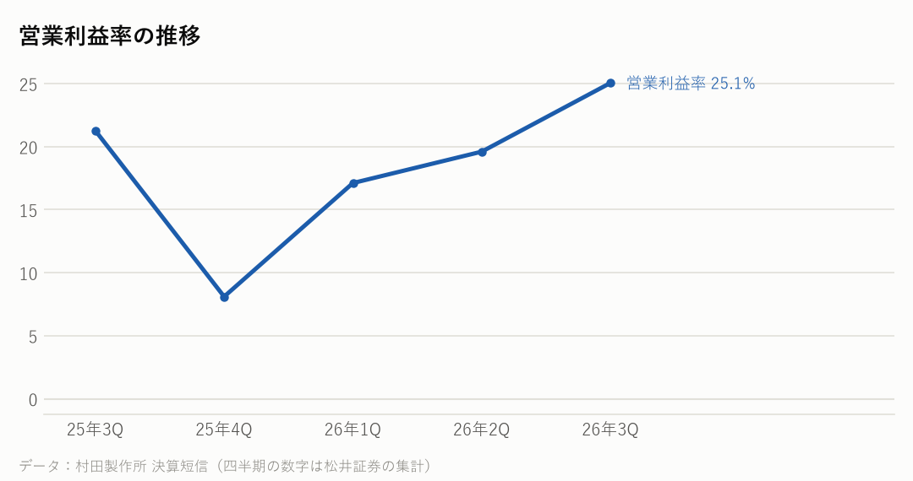

6981｜2026年7〜9月期の決算｜決算発表 2026年10月30日
村田製作所の決算：スマホは弱いのに、なぜ過去最高？――データセンター向けが2倍に
7〜9月期の売上高は前年同期比21%増の5,885億円、営業利益は42%増の1,475億円で、どちらも四半期で過去最高だった。上期のデータセンター向けの売上は前年同期の約2倍の1,649億円になった。AIサーバー向けの需要が想定以上だとして、通期の予想を売上高2兆2,600億円、営業利益5,200億円に引き上げた。
主な数字（2026年7〜9月期）
| 今回 | 前年同期 | 前年比 | |
|---|---|---|---|
| 売上高 | 5,885億円 | 4,866億円 | +20.9% |
| 営業利益 | 1,475億円 | 1,035億円 | +42.4% |
| 営業利益率 | 25.1% | 21.3% | |
| 純利益 | 1,048億円 | 827億円 | +26.7% |
製品ごとの売上（4〜9月の上期）
| 部門 | 売上 | 前年比 |
|---|---|---|
| コンデンサ（MLCCなど） | 6,056億円 | +33.1% |
| 高周波・通信 | 1,985億円 | -2.1% |
| インダクタ・EMIフィルタ | 1,349億円 | +21.8% |

会社の見通し（2027年3月期・通期、引き上げ）
| 売上高（通期） | 2兆2,600億円（1,500億円の引き上げ） |
|---|---|
| 営業利益（通期） | 5,200億円（900億円の引き上げ） |
| 7〜9月期の受注 | 7,534億円（受注÷売上＝1.28） |
- 通期の予想は、売上高を1,500億円、営業利益を900億円引き上げた。AIサーバー向けを中心としたデータセンター関連の需要が、これまでの想定以上に増えていることを主な理由に挙げた（報道より）。
- 一方で、スマートフォンとパソコンの市場の見通しは引き下げた。スマートフォンは11億6,000万台（6.5%減）、パソコンは3億5,000万台（12.1%減）を見込む（報道より）。
- 7〜9月期の受注は7,534億円で過去最高。受注÷売上は1.28。会社は、納期の長い注文や一部の前倒しの注文が今後に影響する可能性があるとして、動きを見ていくとしている。
もうけの力

日本の半導体関連の会社と比べると
各社の直近の四半期。在庫の日数は「在庫が売上原価の何日分か」。
| 会社 | 決算期末 | 売上高 | 前年比 | 粗利益率 | 営業利益率 | 設備投資/売上 | 在庫の日数 |
|---|---|---|---|---|---|---|---|
| 村田製作所 | 2026-09 | 5,885億円 | +20.9% | ― | 25.1% | ― | ― |
| 東京エレクトロン | 2026-09 | 9,351億円 | +48.4% | 47.8% | 31.6% | ― | ― |
| アドバンテスト | 2026-09 | 4,777億円 | +81.7% | ― | 55.9% | ― | ― |
| キオクシア | 2026-09 | 24,800億円 | +453.2% | ― | 80.4% | ― | ― |
| イビデン | 2026-09 | 1,393億円 | +42.1% | ― | 23.9% | ― | ― |
NasdaqWhy の視点：データから読み取れる注目点
決算資料と各社の公式データを並べて読み取れることです。将来を予想するものではありません。
- 【なぜ過去最高になったか】スマホ向けが多い高周波・通信は上期に2%減り、会社はスマホ市場の見通しも引き下げた。それでも売上と利益が過去最高になったのは、データセンター向けの売上が約2倍（上期1,649億円）に増え、AIサーバーに多く使われるMLCCなどのコンデンサが33%伸びたため。まだ分からないのは、過去最高の受注（受注÷売上1.28）に前倒しの注文がどれだけ入っているかで、会社も注意して見ていくとしている。
- 上期のデータセンター向けの売上は1,649億円で、前年同期比102%増。売上全体に占める割合は9.1%から15.1%に上がった。
- 上期のコンデンサ（MLCCなど）の売上は6,056億円で33%増えた。一方、スマホ向けが多い高周波・通信は2%減った。
- MLCCの生産能力を増やすため、5年で約1兆円を投資する計画を示した（報道より）。
- MLCCは電気をためて流れを整える小さな部品で、AIサーバーには1台に多く使われる。サプライチェーンでは、機器メーカーに部品を納める側にあたる。
- 営業利益率は25.1%で、1年前の21.3%から上がった。
次に確認したい決算・予定
- エヌビディアの決算（11月下旬の見込み）：AIサーバーの出荷の動き。
- アップルなどスマートフォンの会社の動き：引き下げたスマホ市場の見通しとの比べ。
- 村田製作所の次の決算（2027年1月下旬〜2月の見込み）：受注が高い水準を保っているか。
関連リンク
出典：村田製作所 決算短信・決算説明資料（2026年10月30日）、報道（EE Times Japan）。四半期の数字は松井証券の集計
※情報提供のみ。投資判断はご自身でお願いします。※Nasdaq Whyは独立した情報メディアです。Nasdaq, Inc.およびその関連会社とは関係ありません。